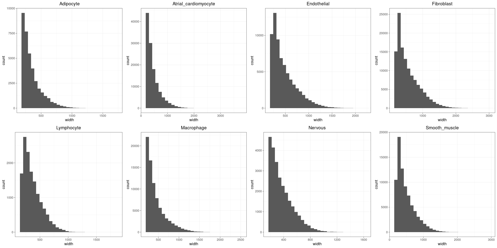
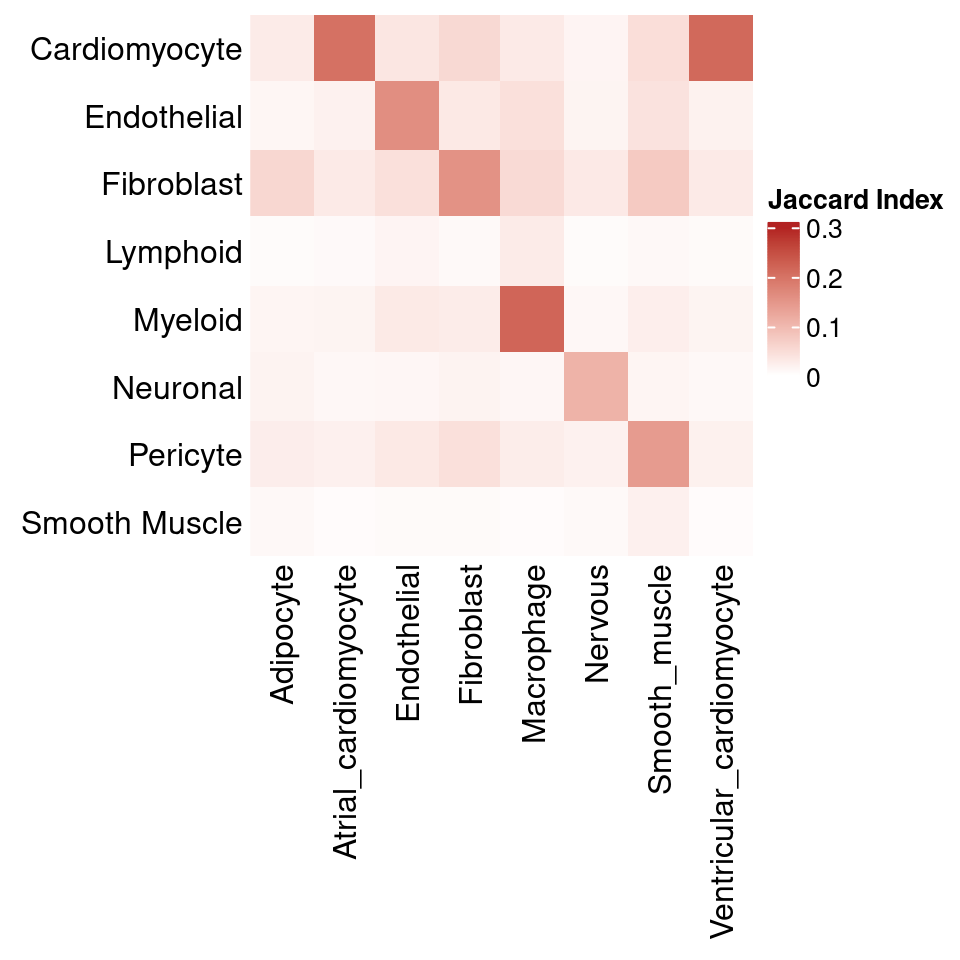
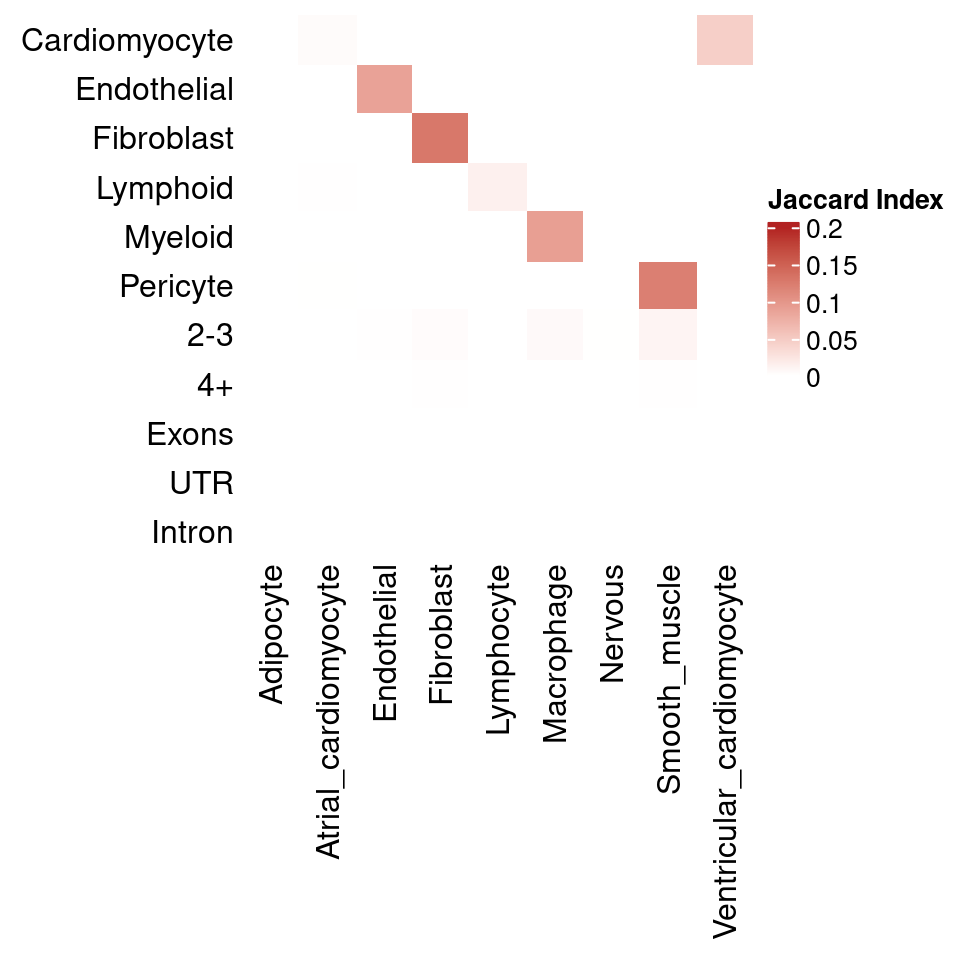

Last updated: 2022-07-22
Checks: 6 1
Knit directory: heart_atlas/
This reproducible R Markdown analysis was created with workflowr (version 1.6.2). The Checks tab describes the reproducibility checks that were applied when the results were created. The Past versions tab lists the development history.
The R Markdown file has unstaged changes. To know which version of the R Markdown file created these results, you'll want to first commit it to the Git repo. If you're still working on the analysis, you can ignore this warning. When you're finished, you can run wflow_publish to commit the R Markdown file and build the HTML.
Great job! The global environment was empty. Objects defined in the global environment can affect the analysis in your R Markdown file in unknown ways. For reproduciblity it's best to always run the code in an empty environment.
The command set.seed(20220722) was run prior to running the code in the R Markdown file. Setting a seed ensures that any results that rely on randomness, e.g. subsampling or permutations, are reproducible.
Great job! Recording the operating system, R version, and package versions is critical for reproducibility.
Nice! There were no cached chunks for this analysis, so you can be confident that you successfully produced the results during this run.
Great job! Using relative paths to the files within your workflowr project makes it easier to run your code on other machines.
Great! You are using Git for version control. Tracking code development and connecting the code version to the results is critical for reproducibility.
The results in this page were generated with repository version 27693aa. See the Past versions tab to see a history of the changes made to the R Markdown and HTML files.
Note that you need to be careful to ensure that all relevant files for the analysis have been committed to Git prior to generating the results (you can use wflow_publish or wflow_git_commit). workflowr only checks the R Markdown file, but you know if there are other scripts or data files that it depends on. Below is the status of the Git repository when the results were generated:
Ignored files:
Ignored: analysis/test.nb.html
Untracked files:
Untracked: output/venn_all_ours_paper1.jpg
Unstaged changes:
Modified: analysis/compare_paper1.Rmd
Modified: analysis/index.Rmd
Note that any generated files, e.g. HTML, png, CSS, etc., are not included in this status report because it is ok for generated content to have uncommitted changes.
These are the previous versions of the repository in which changes were made to the R Markdown (analysis/compare_paper1.Rmd) and HTML (docs/compare_paper1.html) files. If you've configured a remote Git repository (see ?wflow_git_remote), click on the hyperlinks in the table below to view the files as they were in that past version.
| File | Version | Author | Date | Message |
|---|---|---|---|---|
| html | 27693aa | XSun | 2022-07-22 | update |
| Rmd | f3bc3e1 | XSun | 2022-07-22 | update |
We compare the OCRs from our dataset with another paper here.The peak calls are available here. There are two levels of peaks- the peaks called on different clusters using MACS2 and peaks determined to be specifically accessible in a given cell type.
The peak ranges of our data were fixed to 501bp.
The range of the new data set:

TableGrob (2 x 4) "arrange": 8 grobs
z cells name grob
1 1 (1-1,1-1) arrange gtable[layout]
2 2 (1-1,2-2) arrange gtable[layout]
3 3 (1-1,3-3) arrange gtable[layout]
4 4 (1-1,4-4) arrange gtable[layout]
5 5 (2-2,1-1) arrange gtable[layout]
6 6 (2-2,2-2) arrange gtable[layout]
7 7 (2-2,3-3) arrange gtable[layout]
8 8 (2-2,4-4) arrange gtable[layout]We first calculated the Jaccard index for each pairwise comparison between the two data sets. The results are displayed by heatmaps colored by jaccard index value.
We computed Jaccard index using:
genomicCorr.jaccard = function(query, reference) {
res = sum(width(intersect(query, reference))) / sum(as.numeric(width(union(query, reference))))
return(res)
}This is the heatmap for all peaks.
load("/project2/xinhe/xsun/atlas/jaccard_heatmap/jcd_matrix_all_uniq.rdata")
Heatmap(matrix = jcd_matrix, cluster_rows = F,
cluster_columns = F, show_row_names = T, row_names_side = "left",
name = "Jaccard Index",
col = circlize::colorRamp2(c(0, 0.3), c("white","firebrick")), ###modify the figures
row_title = NULL,
column_title = NULL,
row_gap = unit(1, "mm"),
column_gap = unit(1, "mm"),
na_col = "white",
use_raster = T)
This is the heatmap for disjoint peaks.
load("/project2/xinhe/xsun/atlas/jaccard_heatmap/jcd_matrix_disjoint_uniq.rdata")
Heatmap(matrix = jcd_matrix, cluster_rows = F,
cluster_columns = F, show_row_names = T, row_names_side = "left",
name = "Jaccard Index",
col = circlize::colorRamp2(c(0, 0.2), c("white","firebrick")), ###modify the figures
row_title = NULL,
column_title = NULL,
row_gap = unit(1, "mm"),
column_gap = unit(1, "mm"),
na_col = "white",
use_raster = T)
<img src="https://github.com/xsun1229/heart_atlas/raw/master/output/venn_all_ours_paper1.jpg" width="100%">
sessionInfo()R version 4.0.4 (2021-02-15)
Platform: x86_64-pc-linux-gnu (64-bit)
Running under: Scientific Linux 7.4 (Nitrogen)
Matrix products: default
BLAS/LAPACK: /software/openblas-0.3.13-el7-x86_64/lib/libopenblas_haswellp-r0.3.13.so
locale:
[1] LC_CTYPE=C LC_NUMERIC=C
[3] LC_TIME=C LC_COLLATE=C
[5] LC_MONETARY=C LC_MESSAGES=en_US.UTF-8
[7] LC_PAPER=en_US.UTF-8 LC_NAME=C
[9] LC_ADDRESS=C LC_TELEPHONE=C
[11] LC_MEASUREMENT=en_US.UTF-8 LC_IDENTIFICATION=C
attached base packages:
[1] grid parallel stats4 stats graphics grDevices utils
[8] datasets methods base
other attached packages:
[1] ggvenn_0.1.9 dplyr_1.0.7 gridExtra_2.3
[4] ComplexHeatmap_2.6.2 ggplot2_3.3.5 rtracklayer_1.50.0
[7] GenomicRanges_1.42.0 GenomeInfoDb_1.26.7 IRanges_2.24.1
[10] S4Vectors_0.28.1 BiocGenerics_0.36.1
loaded via a namespace (and not attached):
[1] MatrixGenerics_1.2.1 Biobase_2.50.0
[3] sass_0.3.1 jsonlite_1.7.2
[5] bslib_0.2.4 assertthat_0.2.1
[7] highr_0.8 GenomeInfoDbData_1.2.4
[9] Rsamtools_2.6.0 yaml_2.2.1
[11] pillar_1.6.5 lattice_0.20-41
[13] glue_1.6.2 digest_0.6.27
[15] RColorBrewer_1.1-2 promises_1.2.0.1
[17] XVector_0.30.0 colorspace_2.0-0
[19] htmltools_0.5.1.1 httpuv_1.5.5
[21] Matrix_1.4-0 XML_3.99-0.8
[23] pkgconfig_2.0.3 GetoptLong_1.0.5
[25] zlibbioc_1.36.0 purrr_0.3.4
[27] scales_1.1.1 whisker_0.4
[29] later_1.1.0.1 BiocParallel_1.24.1
[31] git2r_0.28.0 tibble_3.1.6
[33] farver_2.1.0 generics_0.1.0
[35] ellipsis_0.3.2 withr_2.4.3
[37] SummarizedExperiment_1.20.0 magrittr_2.0.1
[39] crayon_1.4.1 evaluate_0.14
[41] fs_1.5.0 fansi_0.4.2
[43] Cairo_1.5-14 tools_4.0.4
[45] GlobalOptions_0.1.2 lifecycle_1.0.0
[47] matrixStats_0.58.0 stringr_1.4.0
[49] munsell_0.5.0 cluster_2.1.2
[51] DelayedArray_0.16.3 Biostrings_2.58.0
[53] compiler_4.0.4 jquerylib_0.1.3
[55] rlang_0.4.12 RCurl_1.98-1.5
[57] circlize_0.4.13 rjson_0.2.21
[59] labeling_0.4.2 bitops_1.0-6
[61] rmarkdown_2.7 gtable_0.3.0
[63] DBI_1.1.1 R6_2.5.0
[65] GenomicAlignments_1.26.0 knitr_1.31
[67] utf8_1.2.2 clue_0.3-60
[69] workflowr_1.6.2 rprojroot_2.0.2
[71] shape_1.4.5 stringi_1.5.3
[73] Rcpp_1.0.8 vctrs_0.3.8
[75] png_0.1-7 tidyselect_1.1.0
[77] xfun_0.29